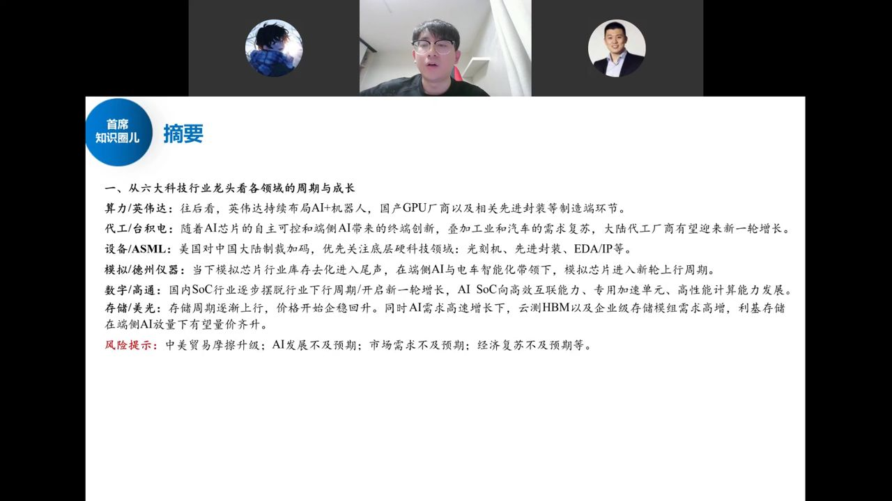
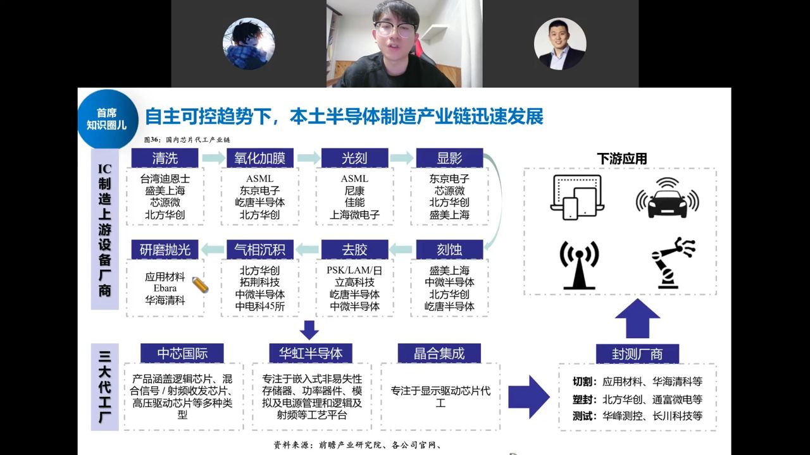
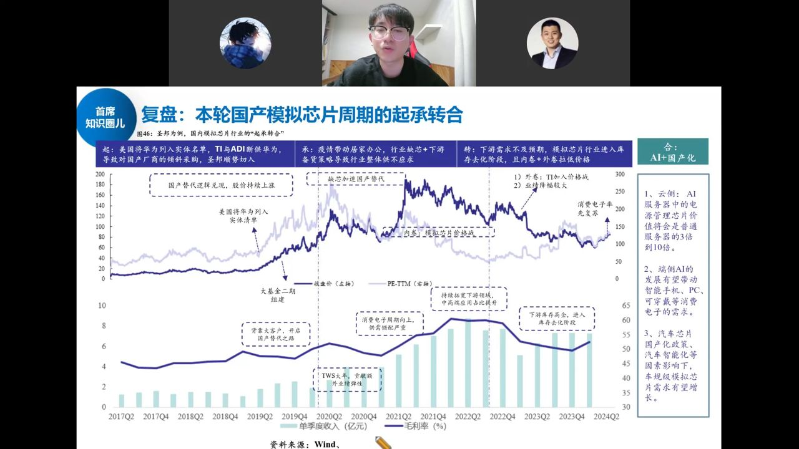

半导体全景地图：把整个板块切成六大块，逐一对标海外龙头—— 算力 GPU 对标英伟达、代工对标台积电、设备对标 ASML、模拟对标德州仪器、数字 SoC 对标高通、存储对标美光。 并梳理中美对抗下国产替代的四个阶段，判断当下所处位置。

陈老师首次系统讲半导体，把板块切成六块、每块对标一个海外龙头，判断周期位置与成长方向：
英伟达继续百倍长牛（GPU 板块海外英伟达、国内寒武纪/海光都是十倍级）。新供国内的 B20 各互联网厂测试，性能未超预期、未激烈囤卡，整体与昇腾 910C、寒武纪思元 590、海光深算三号差距不大，主要替代存量 H100。
台积电三时代：PC 互联网时代 → 移动互联网时代（手机芯片制程不断缩小）→ AI 时代（云侧 GPU + 端侧 SoC/AIPC/IoT）。最大增量在 AI。
EUV 是 7nm 及以下先进制程的必要设备，ASML 被美国要求对华断供但断不干净（中国收入占比太高）。国产光刻机处于稀缺性 0 到 1 阶段。
中美对抗四阶段：① 2019 年卡华为上游芯片供应 → 催生国内 IC 设计爆发；② 卡 IC 设计公司代工 → 催生中芯/华虹等制造与封测；③ 2022 年卡设备（中芯进实体清单）→ 催生北方华创、中微等设备龙头；④ 当下第四阶段：卡零部件、EDA、IP 等底层硬科技——设备跑得再快，没有这些底层环节整条产线也跑不起来。光刻机、先进封装、EDA/IP 都在 0 到 1，弹性最大。
光刻机尴尬处：票偏死、无真正龙头（上海微电子、长光所未上市），偏随机属性；价值量最高在光学组件与光学系统。

从清洗、氧化加膜、光刻、涂胶显影、刻蚀、去胶、气相沉积到研磨抛光，每个环节的头部国内外厂商；三大代工厂中芯国际（逻辑/射频/高压驱动）、华虹（功率/模拟/嵌入式存储）、晶合集成（显示驱动）；封测切割/塑封/测试各环节对应公司。EDA、IP 是国产化转移中伴随发展的底层硬科技。

TI 是全球模拟芯片风向标。模拟经历五轮周期（互联网→PC→移动互联网→5G+IoT 缺芯，上一轮高点恐慌备货涨 10–20 倍后需求不及预期）→ 漫长去库存。
当前处于新一轮周期起点：① 库存去化基本结束；② 价格基本不再跌（再跌只是国内厂商互相卷）。以圣邦为例的"起承转合"：起（华为被列实体名单，TI/ADI 断供，国产切入）→ 承（疫情缺芯，备货致供不应求，加速国产替代）→ 转（需求不及预期，库存去化+内卷外卷压价）→ 合（AI+国产化）：云侧 AI 服务器电源管理芯片价值量是普通服务器的 3–10 倍；端侧 AI 带动手机/PC/可穿戴；汽车智能化带动车规模拟需求。
一张图记住：算力（GPU）看国产替代与先进封装，代工看 China-for-China 与稼动/涨价，设备/光刻机/EDA/IP 是 0 到 1 弹性最大的底层硬科技，模拟在周期底部、AI+汽车抬升价值量，存储接力算力向上。风险：中美摩擦升级、AI 与市场需求不及预期、经济复苏不及预期。